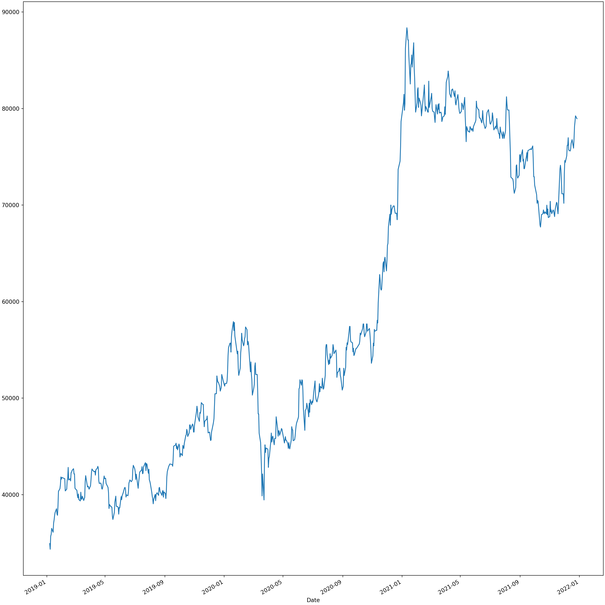

3 불안정적 시계열모형의 추정과 예측
3.1 시작에 앞서 python을 사용하기 위한 설정
다음은 python을 불러오기 위한 것입니다. 본인의 파이썬 경로를 넣으실 수도 있겠지만, 편의를 위하여 포함되어 있는 파일을 사용하시길 추천드립니다.
knitr::opts_chunk$set(echo = TRUE)
knitr::knit_engines$set(python = reticulate::eng_python)
library("reticulate")
use_python("../python")
#본인의 파이썬 경로를 넣어야만 합니다.import pandas as pd
import numpy as np
import statsmodels.api as sm
import yfinance as yf
import matplotlib.pyplot as plt3.2 불안정시계열모형
금융시계열분석에서 흔히 접하는 자료는 불안정시계열(nonstationary time series)이다. 예를 들어, 주가, 주당이익(earnings per share), 배당금, 환율, 국고채 이자율, 소비자물가지수 등등 가공하지 않은 대부분의 원계열들이 불안정 시계열에 속한다. 불안정시계열은 안정성 조건을 만족하지 않으며 일반적으로 결정적(deterministic) 또는 확률적 추세(stochastic trend)를 갖는다.
추세가 있는 불안정시계열은 추세를 제거하고 움직임을 분석하는 경우가 많다. 따라서 추세를 제거하는 몇 가지 방법도 함께 살펴볼 것이다. 다음 그림은 불안정시계열의 대표적인 예로 삼성전자의 일별주가를 예시한 것이다.
samsung = yf.download("005930.KS",start="2019-01-05", end="2021-12-28")##
[*********************100%***********************] 1 of 1 completedplt.cla()
samsung["Adj Close"].plot.line()
plt.show()
samsung## Open High Low Close Adj Close Volume
## Date
## 2019-01-07 38000.0 38900.0 37800.0 38750.0 34936.316406 12748997
## 2019-01-08 38000.0 39200.0 37950.0 38100.0 34350.281250 12756554
## 2019-01-09 38650.0 39600.0 38300.0 39600.0 35702.667969 17452708
## 2019-01-10 40000.0 40150.0 39600.0 39800.0 35882.972656 14731699
## 2019-01-11 40350.0 40550.0 39950.0 40500.0 36514.082031 11661063
## ... ... ... ... ... ... ...
## 2021-12-21 77900.0 78300.0 77500.0 78100.0 76878.984375 14245298
## 2021-12-22 78900.0 79400.0 78800.0 79400.0 78158.656250 17105892
## 2021-12-23 79800.0 80000.0 79300.0 79900.0 78650.843750 13577498
## 2021-12-24 80200.0 80800.0 80200.0 80500.0 79241.460938 12086380
## 2021-12-27 80600.0 80600.0 79800.0 80200.0 78946.156250 10783368
##
## [736 rows x 6 columns]현대재무금융이론론에서는 주가를 예측함에 있어서 일정한 이론모형을 설정하고 애널리스트들의 주당이익 예측치나 무위험 이자율과정에 관한 정보를 추가로 활용하기도 한다. 순수하게 시계열분석 측면에서도 예측하고자 하는 주가 뿐만 아니라 국내외의 주요 경제금융변수들을 함께 고려한 모형을 이용하는 방법도 있다. 이처럼 factor model (요인모형)이나 벡터시계열을 이용한 예측은 후술하기로 하고 여기에서는 단일 시게열만을 고려한 불안정시계열모형의 에측기법을 살펴보기로 한다.
3.3 확률보행모형
불안정 확률과정의 가장 간단한 예로 AR(1)모형의 계수 \(\phi\)가 1인 ‘확률보행모형’(Random Walk Model, 이하 RW)을 생각하여 보자. RW모형은 AR다항식의 근이 1, 즉 단위근을 갖는 경우이며 안정성조건을 만족하지 않는다.
불안정 확률과정은 ‘적분과정’(integrated process)이라고도 하는데, RW과정에서 등호 오른쪽의 과거값을 반복 대입하여 다음과 같이 표현하면 그 이유를 알 수 있다.
\[ x_t = \mu + x_{t-1} + a_t = \mu + \Sigma^\infty_{j=0} a_{t-j}= \mu + a_t + \Sigma^\infty_{j=1} a_{t-j}, \quad a_t\sim (0,\sigma^2) \]
\(\mu\)는 표류항(rate of drift)라고 부른다. 앞으로는 0으로 가정할 것이다. \(x_t\)의 분산은 유한한 상수가 아니므로 안정성 조건을 위배하며 따라서 불안정 시계열이 된다. 또한 \((1-L)x_t = a_t\)로 표현해보면 AR 다항식이 하나의 단위근을 가지므로 불안정적임을 확인할 수 있다. 현시점의 \(x_t\)값은 현 시점을 포함하여 과거의 모든 잔차항들의 합계이므로 이는 마치 \(\{a_t\}\)계열을 적분한 것과 같다. 따라서, \(x_t\)를 적분과정이라고 부른다. 물론 \(x_t\)를 한 번 차분하면, \(a_t\), 즉 안정적 과정이므로 \(x_t\)를 ‘I(1)과정’,즉 한 번 차분하면 안정적 시계열이 되는 ’1차 적분과정’이라고 표현한다. 유사하게 백색잡음은 그 자체가 안정적 과정이므로 ’I(0)과정’이라고 표현한다.
또 하나의 특징은 \(\partial x_t / \partial a_{t-j}, \ j=0,1,2,\cdots\)의 크기가 모두 1로 같으며 특정 시점에서의 충격은 \(x_t\)의 ’수준’에 항구적인 영향을 미친다는 것이다. AR(1)과 같은 안정적 시계열 모형서 충격이 시간의 경게에 따라 그 영향력이 지수적으로 감소하는 것과 대조를 이룬다.
3.3.1 예제) 확률보행과정 Sample ACF와 Sample PACF
다음은 확률보행과정의 시뮬레이션값과 표본 ACF, 표본 PACF이다.
from statsmodels.tsa.arima_process import ArmaProcess
from statsmodels.graphics.tsaplots import plot_acf
from statsmodels.graphics.tsaplots import plot_pacf
plt.cla()
fig, ax = plt.subplots(3,1, constrained_layout=True)
plt.subplot(3, 1, 1)
rw = ArmaProcess(np.array([1, -1]), np.array([1])).generate_sample(nsample=500)
plt.plot(rw)
plt.title('Random walk without a drift')
#acf
plot_acf(rw, lags=40, use_vlines=True, zero = False, auto_ylims=True, ax=ax[1], title ='RW ACF')
#pacf
plot_pacf(rw, lags=40, use_vlines=True, zero = False, auto_ylims=True, ax=ax[2],title ='RW PACF' )
plt.show()3.4 Integrated Moving-Average(IMA)모형
x_t가 단위근을 가지고 있으며 동시에 이동평균한을 가지고 있는 다음과 같은 불안정 시계열모형을 생각해 보자.
\[ (1-L)x_t = a_t - \theta a_{t-1} \]
이 때 적분차수는 1인 반면 자기회구부분은 없으므로 \(x_t\)를 IMA(1,1)과정이라고 한다.(ARIMA(0,1,1)) 이러한 모형은 불안정 시계열을 두 개의 부분, 즉 신호(signal)와 잡음으로 나누는 예제에서 흔히 볼 수 있다. 측정된 데이터 \(x_t\)로부터 추세와 사이클부분으로 분해하는 문제를 보통 신호추출(signal extraction)이라고 부른다. (이떄 추세와 사이클 부분의 공분산은 0을 가정한다.)
\[ x_t = \tau_t+c_t,\quad c_t \sim (0,\sigma^2_c) \\ \tau_t = \tau_{t-1} + v_t, \quad v_t \sim (0,\sigma^2_v) \]
에서 식을 다음과 같이 변형할 수 있을 것이다.
\[ (1-L)x_t = \Delta x_t = v_t + c_t - c_{t-1} = a_t - \theta a_{t-1} \]
이때, \(x_t\)의 분산 공분산을 고려하면 다음과 같다.
\[ Var(\Delta x_t) = \sigma^2_v + 2 \sigma^2_c \\ Cov(\Delta x_t,\Delta x_{t-1}) = - \sigma^2_c \]
따라서 1차 자기상관계수는 다음과 같다.
\[ -0.5 \le \rho_1 = \frac{- \sigma^2_c}{\sigma^2_v + 2 \sigma^2_c} \le 0 \]
그러므로 역으로 어떤 시계열의 차분과정이 래그 1에서 음의 자기상관을 보이는 경우 신호와 잡음의 합으로 모형설정 할 수 있음을 알 수 있다.
3.4.1 IMA(1,1)과정의 Sample ACF와 Sample PACF
from statsmodels.tsa.arima_process import ArmaProcess
from statsmodels.graphics.tsaplots import plot_acf
from statsmodels.graphics.tsaplots import plot_pacf
from statsmodels.tsa.tsatools import unintegrate, unintegrate_levels
# r과는 달리 차분 역과정 함수 사용
plt.cla()
fig, ax = plt.subplots(5,1, constrained_layout=True)
plt.subplot(5,1,1)
ma1_1_ar_parm = np.array([1])
ma1_1_ma_parm = np.array([1, - 0.5])
MA1_1 = ArmaProcess(ma1_1_ar_parm, ma1_1_ma_parm).generate_sample(nsample=501)
#ima11
ima_11 = unintegrate(MA1_1, [1])
plt.plot(ima_11)
#acf
plot_acf(ima_11, lags=40, use_vlines=True, zero = False, auto_ylims=True, ax=ax[1], title ='IMA(1,1) MA(1) = -0.5, ACF')
#pacf
plot_pacf(ima_11, lags=40, use_vlines=True, zero = False, auto_ylims=True, ax=ax[2],title ='IMA(1,1) MA(1) = -0.5, PACF' )
#diff
plt.subplot(5,1,4)
diffed_ima_11 = np.diff(ima_11, 1)
plt.plot(diffed_ima_11)
#acf
plot_acf(diffed_ima_11, lags=40, use_vlines=True, zero = False, auto_ylims=True, ax=ax[4], title ='first diffference of IMA(1,1) MA(1) = -0.5, ACF')
plt.show()
3.5 ARIMA(p,d,q)과정
일반적인 ARIMA(p,d,q)은 다음과 같이 쓸 수 있다.
\[ \phi(L)(1-L)^d x_t = \theta(L)a_t \\ or \\ y'_{t} = c + \phi_{1}y'_{t-1} + \cdots + \phi_{p}y'_{t-p} + \theta_{1}\varepsilon_{t-1} + \cdots + \theta_{q}\varepsilon_{t-q} + \varepsilon_{t} \]
3.6 베버리지-넬슨 분해
실증분석에서 다루는 경제 및 금융시계열들은 불안정 시계열인 경우가 많으며 이들을 직접 다루기보다는 이들로부터 불안정부분인 추세를 제거하고 남은 나머지인 안정적인 계열을 계산하여 분석하는 것이 보통이다. 이와 관련하여 많이 인용되는 추세제거방법 중 하나는 베버리지-넬슨 분해(Beveridge-Nelson decomposition; BN분해)이다. 이는 일차 차분 후 안정적인 시게열은 확률보행을 따르는 추세부분과 사이클부분으로 분해할 수 있음을 보였다. 이 때 안정적 과정인 사이클부분은 추세로 돌아가려는 예측가능한 모멘텀을 가질 수도 있으나 관측값이 추세부분에 근접함에 따라 사라지게 된다. BN 분해를 예시하기 위하여 다음과 같은 IMA(1,1) 과정을 두 개의 부분으로 분해하는 과정을 살펴보자.
\[ x_t = x_{t-1} + a_t - \theta a_{t-1} \\ = x_{t-2}+(a_{t-1} - \theta a_{t-2}) + (a_{t} - \theta a_{t-1}) \\ = \Sigma^t_{j=1} a_j - \theta \Sigma^{t-1}_{j=1} a_j \quad (\ x_0 = a_0 = 0 \ 이라고 \ 가정) \\ = (1-\theta)(\Sigma^t_{j=1}a_j)+\theta a_t \]
이때 \(\tau_t = (1-\theta)(\Sigma^t_{j=1}a_j)\) 그리고 \(c_t = \theta a_t\)라고 정의하면 다음과 같이 정리할 수 있다.
\[ x_t = \tau_t + c_t \\ \tau_t = \tau_{t-1} + (1-\theta)a_t = \tau_{t-1}+v_t \\ c_t = \theta a_t = \epsilon_t \]
이때 두 부분의 확률오차항 \(v_t\)와 \(\epsilon_t\)는 모두 \(a_t\)에 비례하며 따라서 완전상관관계에 있다.
보다 일반적인 ARIMA(p,1,q) 과정을 따르는 \(x_t\)를 \(\tau_t\)와 \(c_t\)로 분해하는 경우를 생각해 보자. AR과 MA 래그 다항식이 각각 안정ㅈ성 조건과 가역성 조건을 만족하는 경우 \(x_t\)의 차분과정인 \(\Delta x_t\)는 다음과 같이 월드 표현식으로 쓸 수 있다.
\[ \Delta x_t = \mu + \psi (L) a_t = \mu + \Sigma ^\infty_{j=0} \psi_j a_{t-j} = \mu + e_t \]
단, \(\mu\)는 \(\Delta x_t\)의 결정적(비확률적) 부분으로서 후에 보는 것처럼 추세부분인 \(\tau_t\)의 표류항이된다. 이를 변형하면 \(x_{t+k}\)는 다음과 같은 식으로 표현할 수 있다.
\[ x_{t+k} = x_t + \mu \cdot k + \Sigma^k_{i=1} e_{t+i} \]
이 때 \(e_t=(a_t + \psi_1 a_{t-1} \cdots)\) 임을 상기하면
\[ \Sigma^k_{i=1} e_{t+i} = \Sigma^k_{i=1}a_{t+i} + \psi_1 \Sigma^k_{i=1}a_{t-1+i} + \psi_2 \Sigma^k_{i=1}a_{t-2+i} + \cdots \]
이 성립하고, $E_t a_{t+i} = 0 $이므로 t-시점에서 \(x_{t+k}\)에 대한 예측값은 다음과 같다.
\[ E_t x_{t+k} = \mu \cdot k + x_t + (\Sigma^k_{i=1} \psi_i)a_t + (\Sigma^{k+1}_{i=2} \psi_i)a_{t-1} + (\Sigma^{k+2}_{i=3} \psi_i)a_{t-2} + \cdots \]
BN 분해에서 추세부분 \(\tau_t\)는 k가 무한히 커질 때 예측값 \(E_t(x_{t+k}-\mu \cdot k)\)가 점근하는 값으로 정의된다. 따라서 추세부분 \(\tau_t\)는 다음과 같이 위의 식에서 오른쪽 항들 중 첫번째를 제외한 모든 항들의 합과 같다.
\[ x_t + (\Sigma^\infty_{i=1} \psi_i)a_t + (\Sigma^{\infty}_{i=2} \psi_i)a_{t-1} + (\Sigma^{\infty}_{i=3} \psi_i)a_{t-2} + \cdots \]
3.7 Hodric-Prescott 필터
불안정 시계열로부터 추세를 제거하는데 사용하는 또 다른 방법은 ‘Hodric-Prescott 필터’가 있다. 관측치가 \(\{x_t\}^T_{t=1}\)로 주어졌을 때 HP 필터 분해는 다음의 제곱합을 최소화하는 추세 \(\{\tau_t\}^T_{t=1}\)를 구하는 것이다.
\[ S(\tau_t)=(1/T)\Sigma^T_{t=1}(x_t-\tau_t)^2 + (\lambda/T) \Sigma^{T-1}_{t=2}[(\tau_{t+1}-\tau_t)-(x_t-\tau_t)]^2 \]
\(\lambda\)는 임의의 상수로 추세항에 변동을 허용하는데 따른 ’비용’을 나타내는 항이다. \(\lambda\)를 크게 할수록 추세는 스무드하게 되며 극단적으로 이를 무한대로 놓으면 \(\tau_t\)는 선형추세에 접근한다. 즉, \(\lambda\)를 아주 크게 놓으면 \((\Delta\tau_{t+1}-\Delta \tau_t)\)가 매우 작게 되는 것이다. 반면 이를 0으로 두면 추세가 관측치와 동일하게 된다. 즉, \(x_t = \tau_t\)이다. Hodric and Prescott(1984)는 연간, 분기별 그리고 월별 데이터의 경우 \(\lambda\)를 각각 100, 1,600 그리고 14,400으로 둘 것을 제안하였다.
식을 최소화하는 \(\{x_t\}^T_{t=1}\)를 찾는 것을 수치최소화하는 방법으로 접근하는 것은 매우 어렵다. 왜냐하면 T-1개의 파라미터를 미지수로 놓고 이를 추정해야 하기 때문이다. 실무에서는 수치적인 방법이 아니라 대수적인 방법에 의하야 확률적 추세를 구한다. 즉, 목적함수의 극소화 조건을 직접 유도한 뒤 확률적 추세 \(\{x_t\}^T_{t=1}\)를 닫힌 해의 형태로 구하고 형렬연산을 적용하여 계산하게 된다.
3.7.1 예제)HP 필터 분해
BN 분해와 HP 분해 또는 기타 다른 대안적 방법이 있다고 했을 때 어느 방법을 적용하는 것이 최선인가에 대하여는 아직 이론이 있으며 연구의 목적에 따라 적절한 선택을 할 필요가 있다. 다만, HP필터를 확률보행과정을 따르는 시계열에 적용하는 경우에도 (존재하지 않는) 사이클을 분리해내는 경우도 있으므로 이 방법을 사용할 때는 특히 유의하여야 한다.
다음 예제는 1959년부터 2009년 3분기 까지 분기별 실질 GDP에 관한 분석이다.
dta = sm.datasets.macrodata.load_pandas().data
index = pd.period_range('1959Q1', '2009Q3', freq='Q')
dta.set_index(index, inplace=True)
cycle, trend = sm.tsa.filters.hpfilter(dta.realgdp, 1600)
# 분기별 데이터 이므로 1600 설정
gdp_decomp = dta[['realgdp']]
gdp_decomp["cycle"] = cycle## <string>:1: SettingWithCopyWarning:
## A value is trying to be set on a copy of a slice from a DataFrame.
## Try using .loc[row_indexer,col_indexer] = value instead
##
## See the caveats in the documentation: https://pandas.pydata.org/pandas-docs/stable/user_guide/indexing.html#returning-a-view-versus-a-copygdp_decomp["trend"] = trend## <string>:1: SettingWithCopyWarning:
## A value is trying to be set on a copy of a slice from a DataFrame.
## Try using .loc[row_indexer,col_indexer] = value instead
##
## See the caveats in the documentation: https://pandas.pydata.org/pandas-docs/stable/user_guide/indexing.html#returning-a-view-versus-a-copyplt.cla()
fig, ax = plt.subplots(2,1, constrained_layout=True)
gdp_decomp[["realgdp", "trend"]]["2000-03-31":].plot(ax=ax[0])
gdp_decomp[["cycle"]]["2000-03-31":].plot(ax=ax[1])
plt.show()다음은 KOSPI의 월별 종가를 이용하여 HP 분해를 실행한 결과이다.
kospi = yf.download("^KS11",start="2000-01-04", end="2021-12-31")##
[*********************100%***********************] 1 of 1 completedkospi = kospi.resample('M').ffill()
cycle, trend = sm.tsa.filters.hpfilter(kospi['Adj Close'], 14400)
# 월별 데이터 이므로 14400 설정
kospi_decomp = kospi[['Adj Close']]
kospi_decomp["cycle"] = cycle## <string>:1: SettingWithCopyWarning:
## A value is trying to be set on a copy of a slice from a DataFrame.
## Try using .loc[row_indexer,col_indexer] = value instead
##
## See the caveats in the documentation: https://pandas.pydata.org/pandas-docs/stable/user_guide/indexing.html#returning-a-view-versus-a-copykospi_decomp["trend"] = trend## <string>:1: SettingWithCopyWarning:
## A value is trying to be set on a copy of a slice from a DataFrame.
## Try using .loc[row_indexer,col_indexer] = value instead
##
## See the caveats in the documentation: https://pandas.pydata.org/pandas-docs/stable/user_guide/indexing.html#returning-a-view-versus-a-copyplt.cla()
fig, ax = plt.subplots(2,1, constrained_layout=True)
kospi_decomp[["Adj Close", "trend"]]["2010-01-01":].plot(ax=ax[0])
kospi_decomp[["cycle"]]["2010-01-01":].plot(ax=ax[1])
plt.show()3.8 불안정시계열의 예측
3.8.1 ARIMA(p,d,q)모형의 MMSE 예측
다음과 같이 일반적인 ARIMA(p,d,q)모형 \((d\ne0)\)을 예측하는 방법을 생각해보자.
\[ \phi(L)(1-L)^d x_t = \theta(L)a_t \]
수작업으로 계산할 일은 거의 없을 것이므로 결과만 보인다.
\[ x_{t+k} = \Sigma^\infty_{j=1} \pi_{k-j+1} + \Sigma^\infty_{i=0}\psi_i a_{t+k-i} \]
\(\pi^{(k)}_j = \Sigma^{k-1}_{i=0} \pi_{k-1+j-i}\psi_i\) 따라서 \(E(a_{T+j}|x_t\le T)=0(j>0)\)임을 상기하면 k-단계 후 예측값은 다음과 같이 계산할 수 있다.
\[ \hat{x}_T(k)=E(x_{T+k}|x_T,x_{T-1},\cdots) = \Sigma^\infty_{j=1} \pi^{(k)}x_{T-j+1} \]
이 때 예측오차는 다음과 같다.
\[ e_T(k)=x_{T+k}-\hat{x}_T(k) = \Sigma^{k-1}_{j=0}\psi_j a_{T+k-j} \]
ARIMA(p,d,q)모형의 MMSE 예측오차는 안정적 과정, 즉 ARIMA(p,0,q)모형의 MMSE 예측오차와 동일한 모양을 가지고 있는 것을 유념하자.
3.9 Python을을 이용한 예측 예제
2011년 부터 2020년 까지의 삼성전자의 일별 종가를 ARIMA모형으로 설정하여 추정하고 에측해보자.
wd = yf.download("005930.KS",start="2000-01-01", end="2020-12-31")
#wd = wd.resample("3M").ffill()##
[*********************100%***********************] 1 of 1 completed그림은 일별 종가를 나타내고 있다.
plt.cla()
fig, ax = plt.subplots(1,1,constrained_layout=True)
plt.subplot(1, 1, 1)
plt.plot(wd["Adj Close"])
plt.title('SAMSUNG Adj Close')
plt.show()plt.cla()
fig, ax = plt.subplots(2,1,constrained_layout=True)
# acf
plot_acf(wd["Adj Close"], lags=10, use_vlines=True, zero = False, auto_ylims=True, ax=ax[0], title ='WD ACF')
# pacf
plot_pacf(wd["Adj Close"], lags=10, use_vlines=True, zero = False, auto_ylims=True, ax=ax[1], title ='WD PACF')
plt.show()res_WD_arima110 = sm.tsa.arima.ARIMA(wd["Adj Close"], order=(1, 1, 0), ).fit() ## C:\Users\user\Desktop\FINTIM~1\python\lib\site-packages\statsmodels\tsa\base\tsa_model.py:471: ValueWarning: A date index has been provided, but it has no associated frequency information and so will be ignored when e.g. forecasting.
## self._init_dates(dates, freq)
## C:\Users\user\Desktop\FINTIM~1\python\lib\site-packages\statsmodels\tsa\base\tsa_model.py:471: ValueWarning: A date index has been provided, but it has no associated frequency information and so will be ignored when e.g. forecasting.
## self._init_dates(dates, freq)
## C:\Users\user\Desktop\FINTIM~1\python\lib\site-packages\statsmodels\tsa\base\tsa_model.py:471: ValueWarning: A date index has been provided, but it has no associated frequency information and so will be ignored when e.g. forecasting.
## self._init_dates(dates, freq)print(res_WD_arima110.summary())## SARIMAX Results
## ==============================================================================
## Dep. Variable: Adj Close No. Observations: 5280
## Model: ARIMA(1, 1, 0) Log Likelihood -39203.142
## Date: 일, 09 10 2022 AIC 78410.283
## Time: 20:11:07 BIC 78423.426
## Sample: 0 HQIC 78414.877
## - 5280
## Covariance Type: opg
## ==============================================================================
## coef std err z P>|z| [0.025 0.975]
## ------------------------------------------------------------------------------
## ar.L1 0.0363 0.006 5.855 0.000 0.024 0.048
## sigma2 1.651e+05 1263.699 130.686 0.000 1.63e+05 1.68e+05
## ===================================================================================
## Ljung-Box (L1) (Q): 0.01 Jarque-Bera (JB): 26340.34
## Prob(Q): 0.93 Prob(JB): 0.00
## Heteroskedasticity (H): 19.67 Skew: 0.48
## Prob(H) (two-sided): 0.00 Kurtosis: 13.90
## ===================================================================================
##
## Warnings:
## [1] Covariance matrix calculated using the outer product of gradients (complex-step).print("\n\n\n")print("AR Roots : ", res_WD_arima110.arroots)## AR Roots : [27.56137516]print("MA Roots : ", res_WD_arima110.maroots)## MA Roots : []print("Inverted AR Roots : ", res_WD_arima110.arroots**(-1))## Inverted AR Roots : [0.03628266]print("Inverted MA Roots : ", res_WD_arima110.maroots**(-1))## Inverted MA Roots : []print("Mean Squared Error (MSE) : ", res_WD_arima110.mse)## Mean Squared Error (MSE) : 169167.51874499713print("="*50)## ==================================================print("box test on residuals : ")
#res_WD_arima110.test_serial_correlation('ljungbox')## box test on residuals :sm.stats.diagnostic.acorr_ljungbox(res_WD_arima110.resid, lags=[5])## lb_stat lb_pvalue
## 5 13.517299 0.018985예측을 진행하겠습니다.
#print(res_WD_arma11.forecast(10)) # 분산이 없음
forecast_10 = res_WD_arima110.get_forecast(100)## C:\Users\user\Desktop\FINTIM~1\python\lib\site-packages\statsmodels\tsa\base\tsa_model.py:834: ValueWarning: No supported index is available. Prediction results will be given with an integer index beginning at `start`.
## return get_prediction_index(forecast_10.predicted_mean # 예측 평균## 5280 78752.215670
## 5281 78755.667230
## 5282 78755.792462
## 5283 78755.797005
## 5284 78755.797170
## ...
## 5375 78755.797176
## 5376 78755.797176
## 5377 78755.797176
## 5378 78755.797176
## 5379 78755.797176
## Name: predicted_mean, Length: 100, dtype: float64forecast_10.conf_int(alpha=0.05) #알파값에 따른 신뢰구간간## lower Adj Close upper Adj Close
## 5280 77955.719249 79548.712091
## 5281 77608.634465 79902.699995
## 5282 77342.040790 80169.544133
## 5283 77118.187072 80393.406939
## 5284 76921.446854 80590.147487
## ... ... ...
## 5375 70661.067122 86850.527230
## 5376 70618.983948 86892.610405
## 5377 70577.117308 86934.477045
## 5378 70535.463894 86976.130459
## 5379 70494.020482 87017.573871
##
## [100 rows x 2 columns]이를 그래프로 나타내겠습니다.
import seaborn as sns
plt.cla()
fig, ax = plt.subplots(constrained_layout=True)
fig.set_size_inches(15, 15)
# 신뢰구간
ax.fill_between(
forecast_10.conf_int(alpha=0.05).index,
forecast_10.conf_int(alpha=0.05)["upper Adj Close"]/100, #상한
forecast_10.conf_int(alpha=0.05)["lower Adj Close"]/100, #하한
facecolor='green',
interpolate=True,
alpha = 0.3) # 투명도
# 평균
ax.plot( forecast_10.predicted_mean/100 , 'g')
# x축, y축 제목
ax.set_xlabel('date', fontsize = 10)
ax.set_ylabel('WD', fontsize = 10)
# x축, y축 폰트 사이즈
ax.tick_params(axis = 'x', labelsize = 1)
ax.tick_params(axis = 'y', labelsize = 5)
# 년도 데이터 전체 표출
ax.set_xticks(forecast_10.conf_int(alpha=0.05).index);
plt.show()